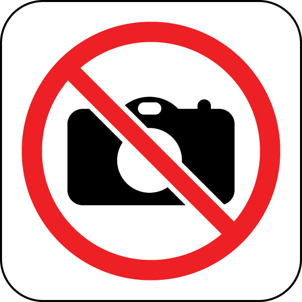

<link rel="import" href="../../bower_components/polymer/polymer.html">

<polymer-element name="rov-video">
  <template>
    <style type="text/css">
      #container {
        height: 100%;
        width: 100%;
      }

      #noVideo,
      #video {
        border: 2px solid black;
        background-color: black;
        max-width: 100%;
        vertical-align: middle;
        height: 100%;
      }

      #videoCanvas {
        width: 100%;
      }

      .hidden {
      display: none;
      visibility: hidden;
      }

      .center {
        left: 0;
        right: 0;
        margin-left: auto;
        margin-right: auto;
        float: none;
      }

      img.center {
        display: block;
      }
      img.center.hidden {
        display: none;
      }

    </style>

    <div id="container">
      
      
      <canvas id='videoCanvas'></canvas>
    </div>

  </template>
  <script>
    (function() {

      var socket = window.io.connect();
      var srcAddress = undefined;

      var videoStarted = function() {
        var address = 'http://' + socket.io.engine.hostname + ':' + CONFIG.video_port + '/?action=stream';
        srcAddress = address;
        console.log('video enabled');
      };
      socket.on('videoStarted', function (data) {
        videoStarted();
      });
      socket.on('VideoStopped', function (data) {
        srcAddress = undefined;
        console.log('video stopped');
      });

      Polymer({
        interval: undefined,
        domReady: function () {

          var canvas = this.$.videoCanvas;
          var srcImg = this.$.video;
          var noVideoImg = this.$.noVideo;
          var videocontainer = $(this.$.container);

          var startRendering = function () {
            var self = this;
            $(srcImg).attr('src', srcAddress);
            var interval = setInterval(function () {
              var internalinterval = interval;
              var width = videocontainer.innerWidth();
              var height = videocontainer.innerHeight();
              canvas.width = width;
              canvas.height = height;
              var ctx = canvas.getContext('2d');
              ctx.fillRect(0, 0, canvas.width, canvas.height);
              var proportionalHeight = width * srcImg.height / srcImg.width;

              try {
                ctx.drawImage(srcImg, 0, (canvas.height - proportionalHeight) / 2, width, proportionalHeight);
              }
              catch (e) {
                clearInterval(internalinterval);
                //ctx.drawImage(noVideoImg, 0, (canvas.height - proportionalHeight) / 2, width, proportionalHeight);
                $(canvas).addClass('hidden');
                $(noVideoImg).removeClass('hidden');
              }
            }, 64);  //only need to redraw at the framerate of source video
          };

          if (srcAddress) {
            startRendering();
          }
          else {
            socket.once('videoStarted', function() {
              startRendering();
            });
            socket.on('VideoStopped', function() {
              clearInterval(this.interval);
            });
            socket.emit('videoStatus', function(status) {
              if (status) {
                videoStarted();
                startRendering();
              }
            });

          }
        },
        detached: function() {
          clearInterval(this.interval);
        }
      });
    })();
  </script>

</polymer-element>
  


